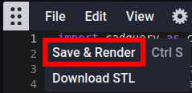

Generate
Step 1: Open the Braille Sign
- Open the design in CadHub.xyz by right clicking this link and opening in a new tab.
- The default braille sign should generate within 30 seconds or so. If it does not, click
File->Save & Renderto re-render it.

Step 2: Modify the Braille Sign
- There is a variable at the top of the model script which is called
text.

- Modifying the text inside the quotes will change what braille dots are generated in the model.

Step 3: Render the Modified Braille Sign
- Click
File->Save & Renderto generate the sign with the new braille based on the text variable.
- Once the render is complete, it should be possible to rotate, pan and zoom the image in the Viewer.
- Left mouse click and drag to rotate.
- Mouse wheel click and drag or roll to zoom.
- Right mouse click and drag to pan.

Step 4: Download the Modified Braille Sign
- Once the render is complete, clicking
File->Download STLwill download an STL file that can be used with slicer software.
Once the file has been downloaded, move on to the Print step.